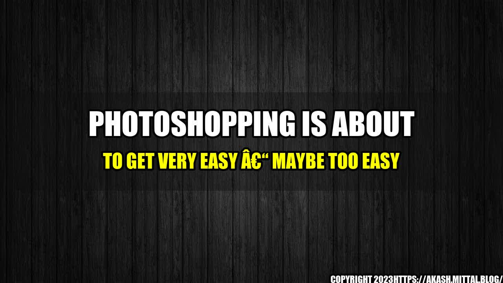

Photoshopping Is About to Get Very Easy – Maybe Too Easy

Have you ever taken a photo but wished that you had the skills to tweak it, crop it, or add something to it to make it perfect? Well, soon you won't need to have years of graphic design experience or a degree in Photoshop to do it! A new wave of artificial intelligence-powered editing tools is making it easier than ever before to make your photos look professional. But with great power comes great responsibility, and the ease with which you can alter images raises important ethical questions.
The Rise of AI-Powered Editing Tools
The rise of AI-powered editing tools is the latest in a long line of technological advances that have made it easier for non-professionals to achieve professional results. The first digital cameras made it easier to take good photos, image editing software like Photoshop made it possible to make them look even better, and now AI-powered editing tools are making it possible to make them look perfect.
But what exactly are these tools? There are a few different types:
- Tools that automatically adjust settings like brightness, contrast, and saturation to improve the overall look of a photo.
- Tools that use AI to automatically remove background objects or people from a photo.
- Tools that use AI to add objects or people to a photo, or to manipulate the image in other ways.
What all of these tools have in common is that they use machine learning algorithms to figure out what makes a photo look good, and then apply those principles to the images that you upload. They're getting pretty good at it too – in fact, in some cases, the results they produce are indistinguishable from those produced by professional photographers using expensive equipment and software.
AI-Powered Editing Tools
So just how good are these tools? Here are some quantifiable examples:
- In 2017, Adobe released an experimental tool called "Content-Aware Fill" that uses AI to remove objects from photos. When tested against human editors, it was able to achieve similar results in a fraction of the time.
- In 2018, Nvidia released a tool called "GauGAN" that uses AI to turn rough sketches into photorealistic landscapes. The tool is so accurate that it's difficult to distinguish sketches made by humans from those made by the AI.
- In 2019, researchers at MIT and IBM developed a tool called "GANpaint Studio" that uses AI to alter the colors and textures of objects within photos. The tool was able to produce convincing results that fooled both human observers and other AIs.
The Ethical Implications of AI-Powered Editing Tools
While there's no doubt that AI-powered editing tools have the potential to make our photos look amazing, they also raise some important ethical questions. Here are a few to consider:
- Is it ethical to use these tools to alter the truth? For example, if you use a tool to remove someone from a photo, are you effectively rewriting history? And if you use a tool to add a product to a photo that wasn't really there, are you misleading people?
- How will these tools affect businesses that rely on photo manipulation? For example, if AI-powered tools make it easy for anyone to create professional-looking photos, what will happen to professional photographers or agencies that specialize in photo editing?
- Will these tools create unrealistic beauty standards? For example, if we all have access to tools that can make us look thinner, younger, or more attractive, will this lead to even more pressure to conform to impossible beauty standards?
Conclusion
So, are AI-powered editing tools a good thing or a bad thing? As with most technological advances, the answer is complicated. Here are a few key takeaways:
- AI-powered editing tools are already producing impressive results, and they're only going to get better over time.
- These tools have the potential to democratize access to professional-quality photo editing, making it possible for anyone to achieve great results.
- However, we must be aware of the ethical implications of these tools, including the potential to manipulate the truth, harm existing businesses, and create unrealistic beauty standards.
As with any technology, it's up to us to use AI-powered editing tools responsibly. While it's exciting to have access to powerful photo editing tools, we must also be aware of the consequences of using them.
Reference URLs, Hashtags, and Categories
Reference URLs:
Hashtags:
- #AIeditingtools
- #ethicsinphotoediting
- #democratizingdesign
- #responsibletechnology
Categories:
- Technology
- Artificial Intelligence
- Photo Editing
- Ethics
- Design
Curated by Team Akash.Mittal.Blog
Share on Twitter Share on LinkedIn